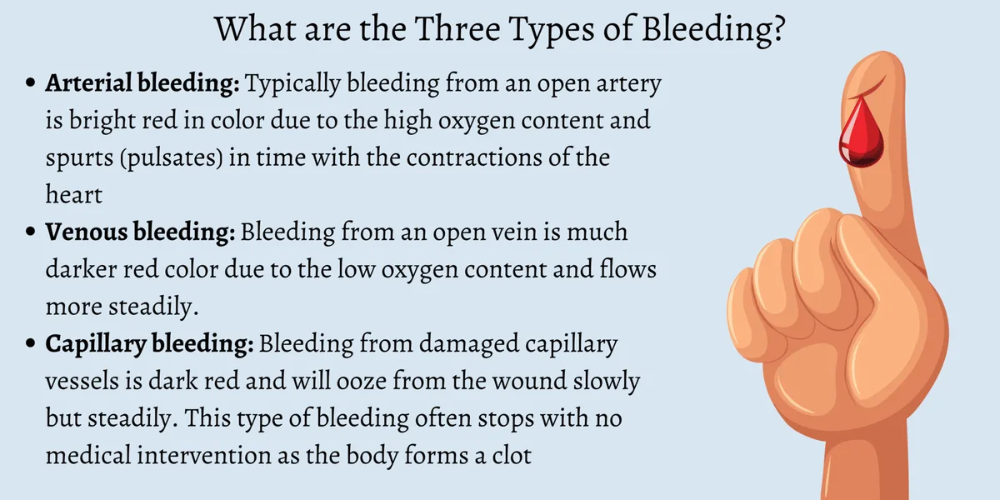
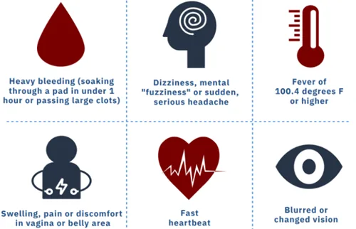

Expanded Nursing Uganda Explanation
Sub arachnoid haemorrhage and intra cranial aneurysm should be understood beyond a short definition. Link the concept to patient history, focused assessment, common risks, nursing priorities, documentation and evaluation of outcomes.
Contents, 13 sections (tap to expand)
01 INTRACRANIAL HEMORRHAGE
An intracranial hemorrhage is a type of bleeding that occurs inside the skull (cranium).
Bleeding around or within the brain itself is known as a cerebral hemorrhage (or intracerebral hemorrhage).
Bleeding caused by a blood vessel in the brain that has leaked or ruptured is called a hemorrhagic stroke .
All bleeding within the skull is referred to as intracranial hemorrhage .
02 Causes of Intracranial Hemorrhage.
- Head Trauma : Injury to the head from falls, car accidents, sports incidents, or seizures.
- Hypertension : High blood pressure leading to damage in blood vessel walls, causing leakage or rupture.
- Blood Clot : Blockage of a brain artery by a clot formed in the brain or traveling from another body part.
- Cerebral Aneurysm : Rupture of a weak spot in a blood vessel wall, forming a balloon-like bulge that bursts.
- Malformed Arteries or Veins: Leaking of improperly formed arteries or veins.
- Bleeding Tumors : Hemorrhage from tumors causing bleeding.
- Pregnancy-Related Conditions : Conditions linked to pregnancy or childbirth, including eclampsia, difficult delivery, and assisted delivery.
- Coagulopathy or Anticoagulation Medicine: Blood clotting disorders, use of anticoagulants like warfarin or heparin, or bleeding disorders like hemophilia and thrombocytopenia.
- Child Abuse Syndrome : Shaken baby syndrome as a result of child abuse.
- Postsurgical Causes : Hemorrhage occurring after surgeries like craniotomy or shunting.
03 Pathophysiology:
The brain relies on a network of blood vessels to supply oxygen and nutrients. Intracranial hemorrhage disrupts this supply, preventing oxygen from reaching brain tissue. The pooled blood from the hemorrhage increases pressure on the brain, further limiting oxygen delivery.
During a hemorrhage or stroke, if oxygen deprivation persists for more than three or four minutes, brain cells begin to die. This results in damage to affected nerve cells and the related functions they control. The interruption of blood flow around or inside the brain is a critical factor leading to cellular damage and dysfunction.
04 Types of Intracranial Hemorrhage
- Epidural hematoma
- Subdural hematoma
- Subarachnoid hemorrhage
- Intra cerebral hemorrhage
05 Epidural Hematoma (Subgalea hemorrhage.
Subgaleal hemorrhage occurs when emissary veins between the skull and intracranial venous sinuses tear, leading to blood collection between the dura/ apo-neurosis and periosteum of the skull.
High-pressure bleeding is a prominent feature. An epidural hematoma, may briefly lead to lose consciousness and then consciousness is regained latter.
Epidural hematoma is accumulation of blood between the Dura and the skull following fracture of the skull
- Most commonly from rupture of middle meningeal artery.
- The hematoma expands rapidly since accumulating blood is arterial in origin and causes compression of the Dura and flattening of underlying gyri
- The patient develops progressive loss of consciousness if hematoma is not drained early.
Signs and symptoms
- Swelling of the ears
- Increasing head circumference as bleeding expands into this space. (hydrocephalus)
- Hypovolemic shock,
- Tachycardia,
- Hypotension
Diagnosis
- Subgaleal hemorrhage may present as a large, boggy fluid collection palpable on the head’s surface. Characteristic of a subgaleal hemorrhage is that it is not restricted by suture lines and may shift with movement. This is in contrast to the more common cephalohematoma, a superficial collection of blood restricted to the space between the periosteum and skull, which is contained along suture lines.
- Neonates with subgaleal hemorrhage are at high risk for rapid decompensation; the subgaleal space can expand to collect a newborn’s entire intravascular blood volume if bleeding continues unrecognized.
06 Subdural hematoma (SDH)
A subdural hemorrhage occurs when bridging veins carrying blood through the dura mater to the arachnoid mater of the meninges are torn.
This causes bleeding, with blood collecting below the dura and brain.
Presence of blood on the surface of the brain beneath its outer covering.
SDH is a collection of blood below the inner layer of the dura mater but external to the arachnoid membrane.
- Subdural hematoma is accumulation of blood between the Dura and subarachnoid.
- Develops most often from rupture of veins which cross the surface convexities of the cerebral hemispheres.
Subdural hematoma may be acute or chronic.
- Acute subdural hematoma ; develops following trauma and consists of clotted blood, often in the front parietal region. There is no significant compression of gyri. Since the accumulated blood is of venous origin, symptoms appear slowly and may become chronic with passage of time if not fatal.
- Chronic subdural hematoma ; occurs often with brain atrophy. Chronic subdural hematoma is composed of liquid blood. Separating the hematoma from underlying brain is a membrane composed of granulation tissue.
Diagnosis
- Because subdural bleeders are located within the skull, there is often no physical sign on the scalp that reflects injury. Instead, the presence of hemorrhage may initially be unrecognized. For most neonates, subdural hemorrhage remains asymptomatic and resolves without consequence.
- Clinical problems can arise in case of large volume hemorrhage or if bleeding slowly continues over hours or even days, as in cases of bleeding disorders.
- Symptomatic neonates often present 24–48 hours after birth with nonspecific signs such as apnea, respiratory distress, altered neurologic state, or seizures.
07 Subarachnoid hemorrhage
Subarachnoid hemorrhage occurs when the veins of the subarachnoid villi are torn, leading to a collection of blood in the subarachnoid space .
There’s bleeding between the brain and the thin tissues that cover the brain. These tissues are called meninges.
A sudden, sharp headache usually comes before a subarachnoid hemorrhage. Typical symptoms also include loss of consciousness and vomiting.
- Hemorrhage into the subarachnoid space is most common, caused by;
- rupture of an aneurysm, and rarely, rupture of a vascular malformation.
- Of the three types of aneurysms affecting the larger intracranial arteries, berry , mycotic and fusiform , berry aneurysms are most important and most common.
- Berry aneurysms are saccular in appearance with rounded or lobulated bulge arising at the bifurcation of intracranial arteries and varying in size from 2 mm to 2 cm or more.
- They account for 95% of aneurysms which are liable to rupture.
- Berry aneurysms are rare in childhood but increase in frequency in young adults and middle life.
- They are, therefore, not congenital anomalies but develop over the years from developmental defect of the media of the arterial wall at the bifurcation of arteries forming thin-walled saccular bulges.
- Although most berry aneurysms are sporadic in occurrence, there is an increased incidence of their presence in association with congenital polycystic kidney disease and coarctation of the aorta.
- In more than 85% cases of subarachnoid hemorrhage, the cause is massive and sudden bleeding from a berry aneurysm on or near the circle of Willis.
The four most common sites are;
- In relation to anterior communicating artery.
- At the origin of the posterior communicating artery from the stem of the internal carotid artery.
- At the first major bifurcation of the middle cerebral artery.
- At the bifurcation of the internal carotid into the middle and anterior cerebral arteries
08 Intracerebral hemorrhage
An intracerebral brain hemorrhage (ICH) is bleeding in the brain caused by the rupture of a damaged blood vessel in the head.
As the amount of blood increases, the build-up of pressure can lead to brain damage, unconsciousness or even death.
Intra cerebral hemorrhage is when there’s bleeding inside the brain.
This is bleeding into the brain’s ventricular system, where the cerebrospinal fluid is produced and circulates through towards the subarachnoid space. It can result from physical trauma or from hemorrhaging in stroke ( HTN). This is the most common type of ICH that occurs with a stroke. It’s not usually the result of injury.
- Spontaneous intracerebral hemorrhage occurs mostly in patients of hypertension. Children with systemic diseases that manifest with HTN are at risk because they have micro aneurysms in very small cerebral arteries in the brain tissue.
- Rupture of one of the numerous micro aneurysms is believed to be the cause of intracerebral hemorrhage
- Not common to have recurrent intracerebral hemorrhages like is the case of subarachnoid hemorrhages
- The common sites of hypertensive intracerebral hemorrhage are the region of the basal ganglia (particularly the putamen and the internal capsule), pons and the cerebellar cortex
Diagnosis
- There are very few clinical symptoms of IcH. When present, signs may include an acute drop in hematocrit, new-onset hypotension, and lethargy.
- However, these symptoms are often present in extremely low birth weight and prematures
Signs and Symptoms
A prominent warning sign is the sudden onset of neurological deficit. This is a problem with the brain’s functioning. The symptoms progress over minutes to hours and they include:
- Headache accompanied by neck stiffness
- Drowsiness
- Difficulty speaking/crying
- Nausea
- Vomiting
- Decreased consciousness
- Seizure
- Coma
- Weakness in one part of the body
- Elevated blood pressure
- Cognitive dysfunction or memory loss
- Sudden tingling, weakness, numbness, or paralysis of the face, arm or leg, particularly on one side of the body
- Loss of balance or coordination in older children
- Babies less than 12 months old may develop a swollen fontanel, or soft spot
Diagnosis
- History taking
- Computed temography (CT- scan) of head
- MRI of head
- CBC
- Coagulation profile e.g. INR, PT
- Physical examination e.g. glasgow coma scale (GCS): Eye Opening
- Verbal response
- Best motor response
GLASGOW COMA SCALE
09 Management
- Admission in icu or surgical ward
- Resuscitation (ABC); All patients with GCS < 8 should be intubated for airway protection
- Surgical management
ICH is a medical emergency . Survival depends on getting treatment right away. It may be necessary to operate to relieve the pressure on the skull (craniotomy)
- Craniotomy ; to evacuate blood
- Endovascular treatment ; to occlude parent artery
- Aneurysm coiling ; obstruct aneurysm site with coil
MEDICAL MANAGEMENT
- Steroids to Reduce Swelling: Steroids help reduce inflammation and swelling in the brain. Minimizing swelling is important to prevent further damage to delicate brain tissue.
- Anticoagulants: Reduces clotting to prevent the formation of blood clots. Clots can exacerbate the existing hemorrhage and lead to complications like stroke.
- Anti-Seizure Medications: Controls and prevents seizures. Seizures can further damage the brain and hinder the recovery process.
- Medications to Counteract Anticoagulants: Reverses the effects of any blood thinners previously taken. Prevents excessive bleeding and facilitates clotting.
- Blood Pressure Management: Maintain mean arterial pressure below 130 mm Hg. Helps control bleeding, but excessive hypotension should be avoided to ensure adequate blood flow to the brain.
- Avoiding Hyperthermia: Prevents elevated body temperature. Elevated temperature can worsen brain damage; controlling it is essential for recovery.
- Correction of Coagulopathy: Using interventions like fresh frozen plasma, vitamin K, or platelet transfusions. Correcting coagulation issues ensures proper blood clotting and reduces the risk of complications.
- Anticonvulsant Initiation: Controls seizures. Seizures can cause additional harm to the brain and hinder recovery.
- Transfer to Operating Room or ICU: Facilitates specialized care and monitoring. Swift transfer ensures prompt and appropriate management of the patient’s condition.
- Consideration of Nonsurgical Management: For patients with minimal neurological deficits. Nonsurgical approaches may be appropriate in less severe cases, avoiding unnecessary interventions.
- Dietary Measures: Initiating enteral feedings, possibly via nasogastric tube or percutaneous device. Ensures proper nutrition and supports the patient’s recovery.
- Activity Management: Bed rest initially, followed by a progressive increase in activity. Balancing rest and activity promotes recovery without causing undue stress on the healing brain.
Nursing Concerns Intracranial Hemorrhage:
- Risk for Increased Intracranial Pressure: Bleeding within the brain can lead to increased intracranial pressure, which can damage brain tissue.
- Risk for Neurological Deficits: The hemorrhage can cause permanent neurological damage, such as paralysis, speech impairment, or cognitive decline.
- Risk for Seizures: The hemorrhage can trigger seizures.
- Risk for Complications of Immobility: The patient may be bedridden, increasing the risk of complications such as pneumonia, deep vein thrombosis, and pressure ulcers.
- Risk for Anxiety and Fear: The patient and family may experience anxiety and fear about the diagnosis and prognosis.
- Risk for Family Dysfunction: The patient’s illness can put a strain on family relationships.
- Risk for Post-Traumatic Stress Disorder: The patient may experience PTSD after a traumatic brain injury.
Complications to Monitor:
- Seizures : Can occur and require prompt management.
- Paralysis : Possible impairment of motor functions.
- Memory Loss : Cognitive deficits may arise.
- Stroke : Hemorrhage can lead to a secondary stroke.
- Permanent Brain Damage : A risk, especially if complications are not managed effectively.
- Cerebral Coning: Herniation of brain tissue, a serious complication.
- Depression : Emotional and psychological impact.
- Bedsore : Potential complication due to immobility, requiring preventive measures.
10 Nursing Uganda Clinical Lens
Use Sub arachnoid haemorrhage and intra cranial aneurysm as a practical nursing topic, not only a memorized definition. Start with normal structure and function, then connect it to assessment findings and disease.
- What to understand first: define sub arachnoid haemorrhage and intra cranial aneurysm, identify the normal or expected pattern, then explain what changes when the patient is unwell.
- Why it matters in care: the nurse must recognize risk early, explain findings clearly, document accurately and know when to escalate.
- How to revise it: connect each point to assessment, nursing diagnosis or care problem, intervention, rationale and evaluation.
11 Assessment Guide
- Relevant inspection, palpation, movement, auscultation, vital signs or neurological checks.
- Normal findings, abnormal findings and what each abnormality may indicate.
- Patient history, risk factors and how the body system affects other systems.
12 Nursing Priorities, Rationales and Outcomes
- Use anatomy to explain symptoms and guide focused assessment.
- Recognize findings that need urgent escalation.
- Teach the patient using simple body-system language.
The rationale for these priorities is patient safety: nursing actions should prevent deterioration, reduce discomfort, support recovery and create clear evidence for the next caregiver.
- Expected outcome: The learner can explain normal function, identify abnormal signs and connect them to nursing action.
13 Patient Teaching and Revision Check
- Explain sub arachnoid haemorrhage and intra cranial aneurysm in simple language the patient or caregiver can repeat back.
- Teach warning signs, medicine or follow-up instructions, hygiene or lifestyle points where relevant.
- For exams, prepare a short answer using: definition, causes or risk factors, signs, assessment, management, complications and prevention.
- For ward practice, document baseline findings, actions taken, patient response and the plan for review.
Illustrations and Diagrams (3)



Related Video Lectures
Watch nursing lecture videos on YouTube for this topic. Opens in a new tab.
Watch on YouTubeExternal link: YouTube may use its own cookies and terms. Nursing Uganda is not affiliated with YouTube.